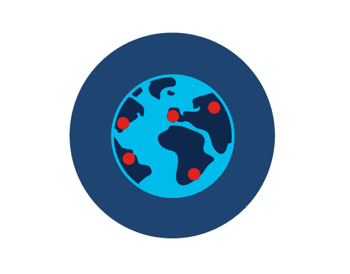

Explain the basics of being safe online, including what cybersecurity is and its potential impact.
Explain the most common cyber threats, attacks and vulnerabilities.
Explain how organizations can protect their operations against these attacks.
Access various information and resources to explore the different career options in cybersecurity.
Module 1: Introduction to Cybersecurity
Welcome to this module, which aims to help you understand
the growing need for cybersecurity.
Faced with an unprecedented surge in cyber attacks, never before has
the demand for cybersecurity professionals been so high.
Find out more about what cybercriminals want and what you can do
to ensure that a cyber threat never becomes a reality.
1.1 The World of Cybersecurity
Hi, my name is Guru. Welcome to eLearning company @Apollo. We’re delighted to have you on board. The
company is in a critical growth phase, but we’re worried that we’re susceptible to security
breaches.
We’ve seen so many companies fall victim to cybercrime, and we don’t want to be next. We need to
move quickly and build our cybersecurity defenses. Are you ready to help?
1.1.1 What Is Cybersecurity?
Cybersecurity is the ongoing effort to protect individuals, organizations and governments from
digital attacks by protecting networked systems and data from unauthorized use or harm.
On a personal level, you need to safeguard your identity, your data, and your computing devices.
At an organizational level, it is everyone’s responsibility to protect the organization’s
reputation, data and customers.
As more digital information is being gathered and shared, its protection becomes even more vital
at the government level, where national security, economic stability and the safety and
wellbeing of citizens are at stake.
1.1.2 Protecting Your Personal Data
Personal data is any information that can be used to identify you, and it can exist both
offline and online.
Offline identity
Your offline identity is the real-life persona that you present on a daily basis at home, at
school or at work. As a result, family and friends know details about your personal life,
including your full name, age and address.
It’s important not to overlook the importance of securing your offline identity. Identity
thieves can easily steal your data from right under your nose when you’re not looking!
Online identity
Your online identity is not just a name. It’s who you are and how you present yourself to others
online. It includes the username or alias you use for your online accounts, as well as the
social identity you establish and portray on online communities and websites.
You should take care to limit the amount of personal information you reveal through your online
identity.
Many people think that if they don’t have any social media or online accounts set up, then they
don’t have an online identity. This is not the case. If you use the web, you have an online
identity.
1.1.3 Your Online Identity
It’s your first day on the job, and it’s time to choose a username for your online identity. Which
of the following options would you choose?
This is your first chance to gain some valuable defender points at eLearning company @Apollo, so
take your time and think carefully before making your choices.
Choose two correct answers!
jane.doe
wrong
jdoe1990
wrong
jdoe.IT
wrong
j.doe12
correct
jdoe
correct
Hints
When choosing a username, it’s important not to reveal any personal information. It should be
something appropriate and respectful and should not lead strangers to think you are an easy
target for cybercrimes or unwanted attention.
Some other useful tips to help you generate your username:
Don’t use your full name or parts of your address or phone number.
Don’t use your email username.
Don’t use the same username and password combination, especially on financial accounts.
Don’t choose a super-odd username and then reuse it again and again — it makes you easier to
track.
Don’t choose a username that gives clues to your passwords such as a series of
numbers/letters or the first part of a two-part phrase, such as knock-knock or starlight, or
the department in which you work, such as IT.
Do choose a username that’s appropriate for the type of account, i.e., business, social or
personal.
1.1.4 Your Data
Personal data describes any information about you, including your name, social security number,
driver license number, date and place of birth, your mother’s maiden name, and even pictures or
messages that you exchange with family and friends.
Cybercriminals can use this sensitive information to identify and impersonate you, infringing on
your privacy and potentially causing serious damage to your reputation.
How hackers can get their hands on your personal data?
Medical records
Every time you visit the doctor, personal information regarding your physical and mental
health and wellbeing is added to your electronic health records (EHRs). Since the majority
of these records are saved online, you need to be aware of the medical information that you
share.
And these records go beyond the bounds of the doctor’s office. For example, many fitness
trackers collect large amounts of clinical data such as your heart rate, blood pressure and
blood sugar levels, which is transferred, stored and displayed via the cloud. Therefore, you
should consider this data to be part of your medical records.
Education records
Educational records contain information about your academic qualifications and achievements.
However, these records may also include your contact information, attendance records,
disciplinary reports, health and immunization records as well as any special education
records including individualized education programs (IEPs).
Employment and financial records
Employment data can be valuable to hackers if they can gather information on your past
employment, or even your current performance reviews.
Your financial records may include information about your income and expenditure. Your tax
records may include paychecks, credit card statements, your credit rating and your bank
account details. All of this data, if not safeguarded properly, can compromise your privacy
and enable cybercriminals to use your information for their own gain.
1.1.5 Where Is Your Data?
This has got you thinking. Only yesterday, you shared a couple of photos of your first day on the
job with a few of your close friends. But that should be OK, right? Let’s see…
You took some photos at work on your mobile phone. Copies of these photos are now available on
your mobile device.

You shared these with five close friends, who live in various locations across the world.
All of your friends downloaded the photos and now have copies of your photos on their devices.
One of your friends was so proud that they decided to post and share your photos online. The
photos are no longer just on your device. They have in fact ended up on servers located in
different parts of the world and people whom you don’t even know now have access to your photos.
1.1.6 What's More...
This is just one example that reminds us that every time we collect or share personal data, we
should consider our security. There are different laws that protect your privacy and data in your
country. But do you know where your data is?
More examples which may not be so obvious.
Following an appointment, the doctor will update your medical record. For billing purposes, this
information may be shared with the insurance company. In such cases, your medical record, or
part of it, is now accessible at the insurance company.
Store loyalty cards may be a convenient way to save money on your purchases. However, the store
is using this card to build a profile of your purchasing behavior, which it can then use to
target you with special offers from its marketing partners.
1.1.7 Smart Devices
Consider how often you use your computing devices to access your personal data. Unless you have
chosen to receive paper statements, you probably access digital copies of bank account statements
via your bank’s website. And when paying a bill, it’s highly likely that you’ve transferred the
required funds via a mobile banking app.
But besides allowing you to access your information, computing devices can now also generate
information about you.
Wearable technologies such as smartwatches and activity trackers collect your data for
clinical research, patient health monitoring, and fitness and wellbeing tracking. As the
global fitness tracker market grows, so also does the risk to your personal data.
It might seem that information available online is free. But is privacy the price we pay for this
digital convenience?
For example, social media companies generate the majority of their income by selling targeted
advertising based on customer data that has been mined using algorithms or formulas. Of course,
these companies will argue that they are not ‘selling’ customer data, but ‘sharing’ customer data
with their marketing partners.
You can make up your own mind!
1.1.8 What Do Hackers Want?
So, with all this information about you available online, what do hackers want? Of course, they want
your money.
Can you think of an example that you have experienced yourself or that you have heard or read about,
where cybercriminals have accessed or tried to access financial information online?
Were you able to think of at least one example?
A cybercriminal can take advantage of your relationships, accessing your online accounts and
appealing to your good nature to try and trick you into wiring money to your friends or family in a
time of need. For example, there have been many reported cases of hackers impersonating family
members and sending messages stating that they need money wired in order to get home from abroad
after losing their wallets.
And while you may think that your frequent flyer air miles are not valuable to cybercriminals, think
again. In 2015, cybercriminals hacked approximately 10,000 American Airlines and United accounts,
booking free flights and upgrades using stolen credentials. Even though the frequent flyer miles
were returned to the customers by the airlines, this example demonstrates the value of your login
credentials.
Cybercriminals are certainly very imaginative when it comes to gaining access to your money. But
that’s not all they are after — they could also steal your identity and ruin your life.
Let’s find out more.
1.1.9 Identity Theft
Not content with stealing your money for short-term financial gain, cybercriminals are invested in
the long-term gain of identity theft.
Two examples of how they might do this.
Medical theft
Rising medical costs have led to an increase in medical identity theft, with cybercriminals
stealing medical insurance to use the benefits for themselves. Where this happens, any
medical procedures carried out in your name will then be saved in your medical records.
Banking
Stealing private data can help cybercriminals access bank accounts, credit cards, social
profiles and other online accounts. Armed with this information, an identity thief could
file a fake tax return and collect the refund. They could even take out loans in your name
and ruin your credit rating (and your life as well).
1.1.10 Who Else Wants My Data?
It’s not just criminals who seek your personal data.
Select the headings below to find out what other entities are interested in your online identity
and why.
Your Internet service provider (ISP)
Your ISP tracks your online activity and, in some countries, they can sell this data to
advertisers for a profit.
In certain circumstances, ISPs may be legally required to share your information with government
surveillance agencies or authorities.
Advertisers
Targeted advertising is part of the Internet experience. Advertisers monitor and track your
online activities such as shopping habits and personal preferences and send targeted ads your
way.
Search engines and social media platforms
These platforms gather information about your gender, geolocation, phone number and political
and religious ideologies based on your search histories and online identity. This information is
then sold to advertisers for a profit.
Websites you visit
Websites use cookies to track your activities in order to provide a more personalized
experience. But this leaves a data trail that is linked to your online identity that can often
end up in the hands of advertisers!